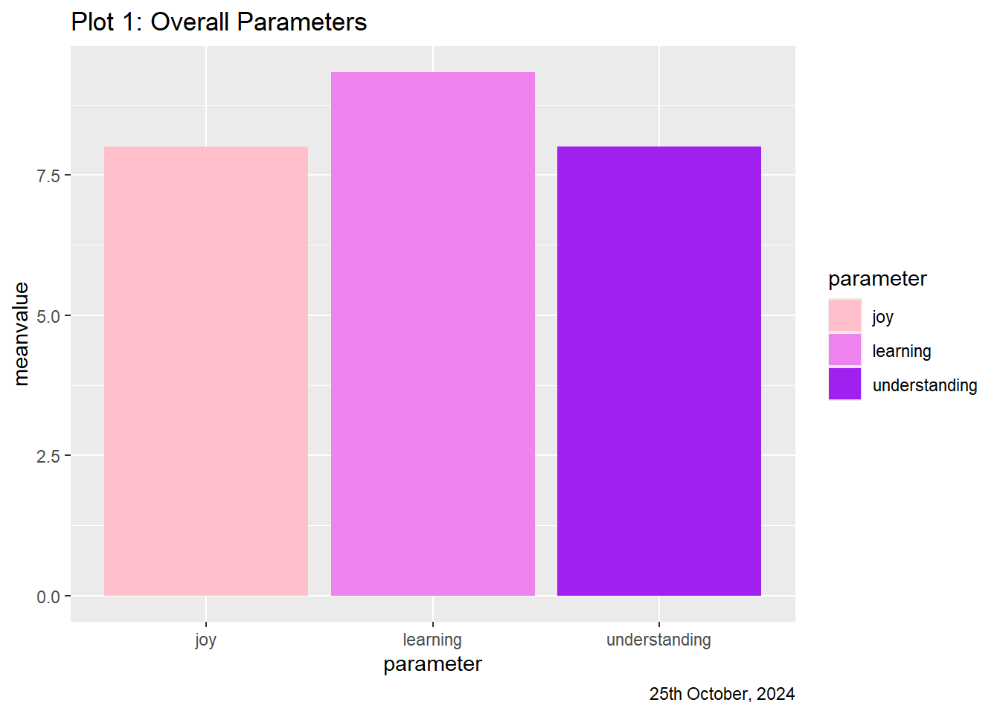
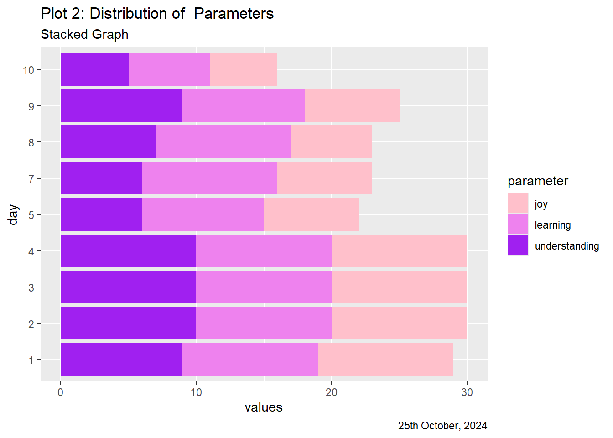
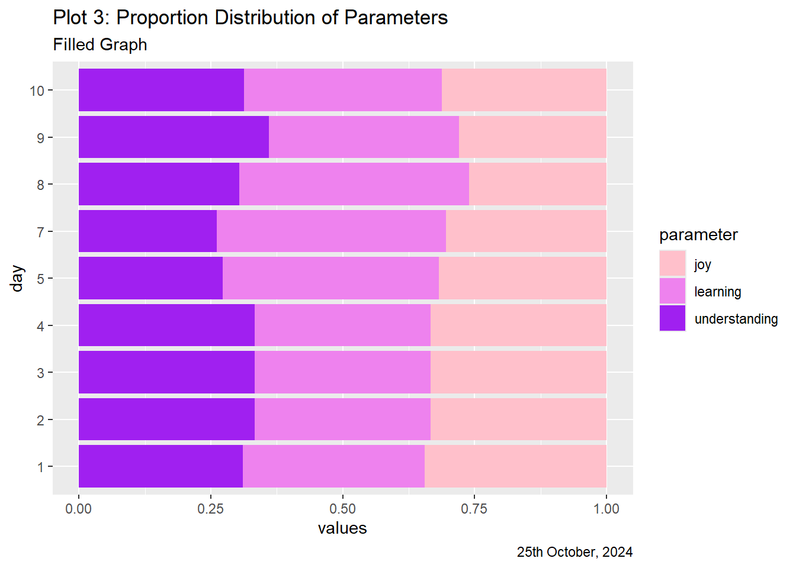
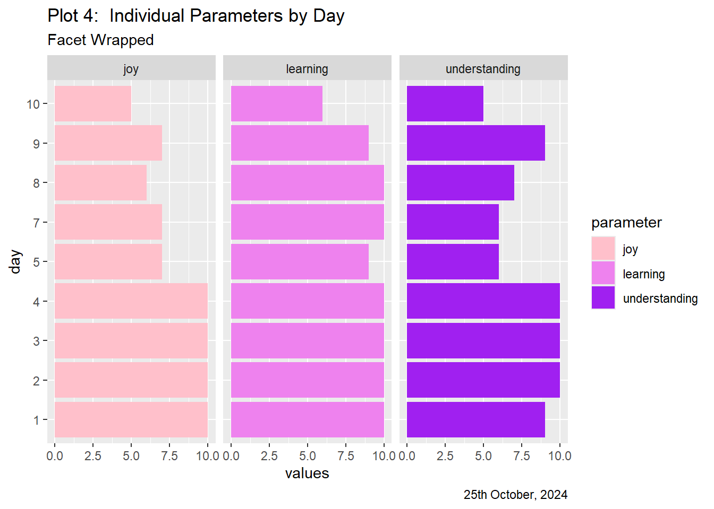
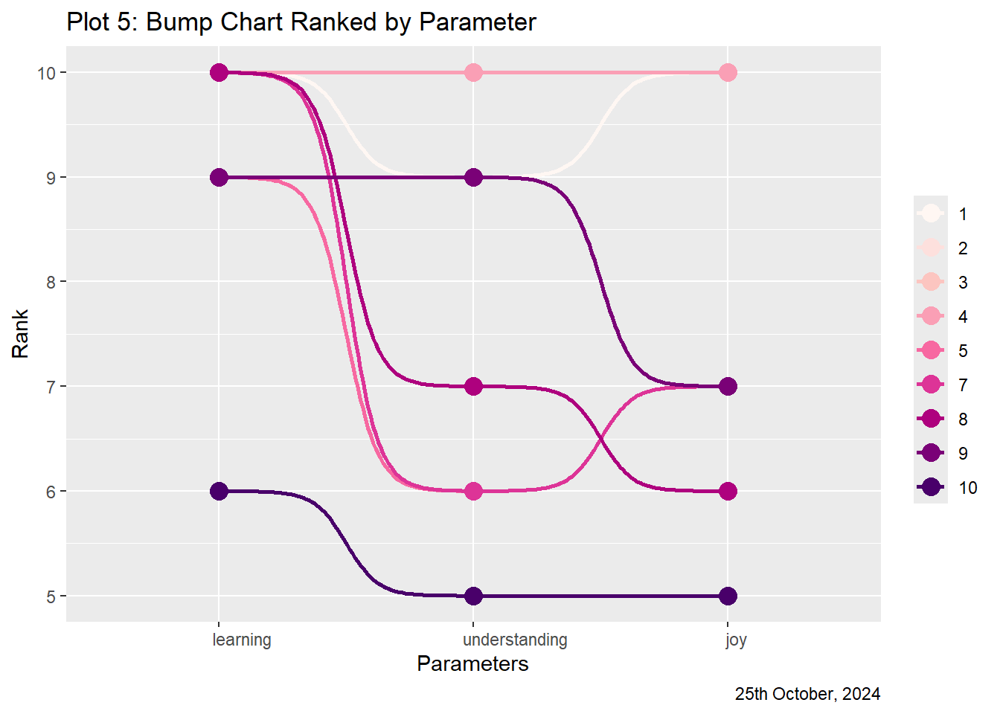
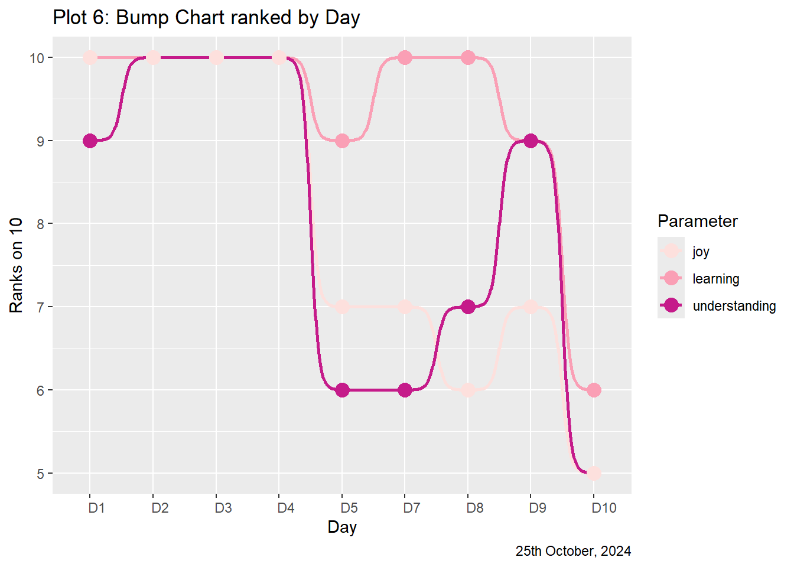
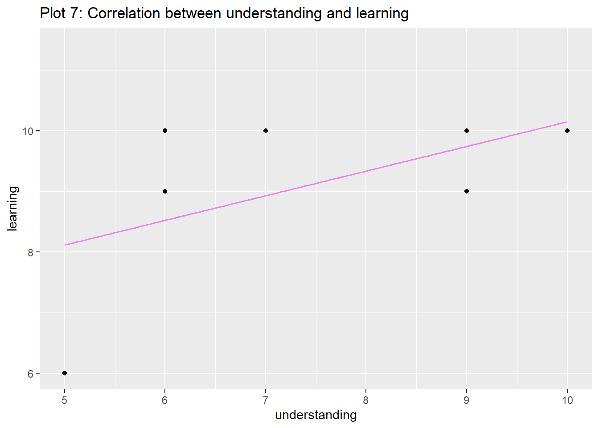

As I began writing what would be the last reflection for this class, a thought occurred to me. What better way to finally reflect, if not with graphs?
.
First I ranked each day of the course out of 10 on my understanding of the course material, my learnings and my joy levels. The following is a rundown of my code process to get to the graphs from this data, and then finally, my final final reflection :)
.
DISCLAIMER! - all inferences and data uncovered on this page must be taken with a mighty grain of salt. I’ve defined the rankings, and if anything, im a bit of a va-riable myself.
Setup Chunk:
library(tidyverse)
── Attaching core tidyverse packages ──────────────────────── tidyverse 2.0.0 ──
✔ dplyr 1.1.4 ✔ readr 2.1.5
✔ forcats 1.0.0 ✔ stringr 1.5.1
✔ ggplot2 3.5.1 ✔ tibble 3.2.1
✔ lubridate 1.9.3 ✔ tidyr 1.3.1
✔ purrr 1.0.2
── Conflicts ────────────────────────────────────────── tidyverse_conflicts() ──
✖ dplyr::filter() masks stats::filter()
✖ dplyr::lag() masks stats::lag()
ℹ Use the conflicted package (<http://conflicted.r-lib.org/>) to force all conflicts to become errors
library(kableExtra)
Attaching package: 'kableExtra'
The following object is masked from 'package:dplyr':
group_rows
library(mosaic)
Registered S3 method overwritten by 'mosaic':
method from
fortify.SpatialPolygonsDataFrame ggplot2
The 'mosaic' package masks several functions from core packages in order to add
additional features. The original behavior of these functions should not be affected by this.
Attaching package: 'mosaic'
The following object is masked from 'package:Matrix':
mean
The following objects are masked from 'package:dplyr':
count, do, tally
The following object is masked from 'package:purrr':
cross
The following object is masked from 'package:ggplot2':
stat
The following objects are masked from 'package:stats':
binom.test, cor, cor.test, cov, fivenum, IQR, median, prop.test,
quantile, sd, t.test, var
The following objects are masked from 'package:base':
max, mean, min, prod, range, sample, sum
library(ggformula)library(skimr)
Attaching package: 'skimr'
The following object is masked from 'package:mosaic':
n_missing
Rows: 10 Columns: 5
── Column specification ────────────────────────────────────────────────────────
Delimiter: ","
chr (1): label
dbl (4): day, learning, understanding, joy
ℹ Use `spec()` to retrieve the full column specification for this data.
ℹ Specify the column types or set `show_col_types = FALSE` to quiet this message.
Code
Data:
## data overview, as I initially input itdatatable(reflection, options =list(pageLength =10))
categorical variables:
name class levels n missing
1 label character 9 10 0
distribution
1 stats theory (20%), a3 (10%) ...
quantitative variables:
name class min Q1 median Q3 max mean sd n missing
1 day numeric 1 3.25 5.5 7.75 10 5.500000 3.027650 10 0
2 learning numeric 6 9.00 10.0 10.00 10 9.333333 1.322876 9 1
3 understanding numeric 5 6.00 9.0 10.00 10 8.000000 2.000000 9 1
4 joy numeric 5 7.00 7.0 10.00 10 8.000000 2.000000 9 1
.
reflection %>%skim()
Data summary
Name
Piped data
Number of rows
10
Number of columns
5
_______________________
Column type frequency:
character
1
numeric
4
________________________
Group variables
None
Variable type: character
skim_variable
n_missing
complete_rate
min
max
empty
n_unique
whitespace
label
0
1
2
15
0
9
0
Variable type: numeric
skim_variable
n_missing
complete_rate
mean
sd
p0
p25
p50
p75
p100
hist
day
0
1.0
5.50
3.03
1
3.25
5.5
7.75
10
▇▇▇▇▇
learning
1
0.9
9.33
1.32
6
9.00
10.0
10.00
10
▁▁▁▂▇
understanding
1
0.9
8.00
2.00
5
6.00
9.0
10.00
10
▇▂▁▅▇
joy
1
0.9
8.00
2.00
5
7.00
7.0
10.00
10
▃▆▁▁▇
.
.
Graphs:
## average of parameters across 10 daysreflection %>%drop_na() %>%mutate( day =as_factor(day)) %>%summarize(learning =mean(learning),understanding =mean(understanding),joy =mean(joy)) %>%pivot_longer(cols =c("learning", "understanding", "joy"),cols_vary ="slowest",names_to ="parameter",values_to ="meanvalue") %>%gf_col(meanvalue ~parameter,fill =~parameter ) %>%gf_refine(scale_fill_manual(values =c("learning"="violet", "understanding"="purple", "joy"="pink"))) %>%gf_labs(title ="Plot 1: Overall Parameters",caption ="25th October, 2024" )

.
Inference 1
Well, I seemed to have learned quite a lot, but haven’t fully understood all I’ve learned. The joy in my learning is about as much as my understanding.
.
.
## modifying data for stacked graphsreflection_mod <- reflection %>%drop_na() %>%mutate( day =as_factor(day)) %>%pivot_longer(cols =c("learning", "understanding", "joy"),cols_vary ="slowest",names_to ="parameter",values_to ="values") %>%glimpse()
## Looking at the distribution of parametersreflection_mod %>%gf_col(day~values,fill =~parameter) %>%gf_refine(scale_fill_manual(values =c("learning"="violet", "understanding"="purple", "joy"="pink"))) %>%gf_labs(title ="Plot 2: Distribution of Parameters",subtitle ="Stacked Graph",caption ="25th October, 2024" )

.
Inference 2
All three parameters gradually decreased as the days went on. Was this because I realized that we wouldn’t be able to cover as much as I thought we would? Or was it because work picked up in terms of the cycle and I couldn’t focus? Even I’m not entirely sure.
.
.
## Looking at proportions for each dayreflection_mod %>%gf_col(day~values,fill =~parameter,position ="fill") %>%gf_refine(scale_fill_manual(values =c("learning"="violet", "understanding"="purple", "joy"="pink"))) %>%gf_labs(title ="Plot 3: Proportion Distribution of Parameters",subtitle ="Filled Graph",caption ="25th October, 2024" )

.
Inference 3
The proportion of my joy, understanding and learning for each day seem to stay in the realm of each other, with nothing too extreme. Sure, there’s definitely differences, but its safe to say that I expected and experienced the same of each day.
.
Interesting.
.
This means that even though I expected the same of each day, I didn’t expect the same over 12 days, since I felt we couldn’t cover as much. I guess this goes to say what a terrible long term judgement I have, oof :’)
.
.
## Looking at each parameter indivduallyreflection_mod %>%gf_col(day~values,fill =~parameter) %>%gf_facet_wrap(~parameter) %>%gf_refine(scale_fill_manual(values =c("learning"="violet", "understanding"="purple", "joy"="pink"))) %>%gf_labs(title ="Plot 4: Individual Parameters by Day",subtitle ="Facet Wrapped",caption ="25th October, 2024" )

.
Inference 4
With the most gradual decline being joy and the most ups and downs in understanding, even if their averages are the same, its clear to see that learning was the most consistent (even if it followed similar trends) through the days. Nice!
Warning: Using `size` aesthetic for lines was deprecated in ggplot2 3.4.0.
ℹ Please use `linewidth` instead.

.
Inference 5
The graph seems to have completely omitted rankings below 5, as all my rankings were 5 and above. In my experience, this class was above average, on the whole! Perhaps this isn’t the best way to visualize this information, but it clearly sets apart the days with the most difference in ranking across parameter. Day 7, the first day of Stats Theory, must have really taken me by surprise.
.
.
## How about the other way?ggplot(reflection_mod, aes(x = day, y = values, color = parameter, group = parameter)) +geom_bump(size =1) +geom_point(size =4) +scale_x_discrete(limits =c("1", "2","3","4","5","7","8","9","10"),labels =c("D1", "D2","D3","D4","D5","D7","D8","D9","D10" ) ) +labs(title ="Plot 6: Bump Chart ranked by Day",caption ="25th October, 2024",x ="Day",y ="Ranks on 10",color ="Parameter") +scale_color_brewer(palette ="RdPu")+theme(axis.text.x =element_text(angle =0, hjust =0.1))

.
Inference 6
The other way in which a Bump Chart can be used for this data, it only confirms what we (I) have understood about myself.
.
.
## correlation test for learning and understandingmosaic::cor_test(learning ~ understanding, data = reflection) %>% broom::tidy() %>% knitr::kable(digits =2,caption ="learning vs understanding" )
learning vs understanding
estimate
statistic
p.value
parameter
conf.low
conf.high
method
alternative
0.61
2.06
0.08
7
-0.08
0.91
Pearson’s product-moment correlation
two.sided
.
## plotting correlationreflection %>%gf_point(learning ~ understanding) %>%gf_lm(color ="violet") %>%gf_labs(title ="Plot 7: Correlation between understanding and learning",x ="understanding",y ="learning")
Warning: Removed 1 row containing non-finite outside the scale range
(`stat_lm()`).
Warning: Removed 1 row containing missing values or values outside the scale range
(`geom_point()`).
Warning: Using the `size` aesthetic with geom_line was deprecated in ggplot2 3.4.0.
ℹ Please use the `linewidth` aesthetic instead.

.
Inference 7
As seen in the upwards slope of the graph, my learning and understanding have a positive correlation, with an estimate on 0.61. However, the confidence intervals include 0, indicating that it is not a significant correlation. We can’t say for sure if my learning and understanding always depend on each other!
.
.
Final (?) Reflection
This week really didn’t feel like the final week of class. Somehow, there is still so much more in the realm of R to be explored – I’m only just realizing that 12 days is barely anything in terms of the learning curve. Apart from R and RStudio, this class has taught me various things.
.
A blog for the web need not have to be some tediously hand-coded HTML document – the versatility of quarto takes care of all that.
.
I think I will also forever look at excel sheets differently; the potential in all those columns and rows for some seriously good art!
.
Providing incentive goes a long way, acting as a catalyst for efficiency in data collection. Even better when the costs are shared, it’s definitely a good investment.
.
Good design is informed by solid data. Hypothesis developed from the very same data is often built on pretences. That does not mean the conclusion isn’t credible: oftentimes, hypotheses are made up to be disproved, since doing the opposite isn’t feasible.
.
Safe to say, this class has also left me with some questions:
.
Eliminating bias in terms of who the data is coming from is done with a coin toss. What about the data itself? How can a researcher account for false statements or partial truths?
.
Trust – in both data and research process begs the question of ethics. Collaborative environments are inevitable, and navigating through them is sometimes more complicated than figuring out R. I can account for myself, but what about situations where I make up one of many parts? My group, my class, my institution?
.
Collecting data ourselves was a lot more fun than I thought it would be. Generally, the thought of approaching random people acts as repellent enough from the task assigned, but just a few interviews in, the chocolates seemed to be performing their magic. It was also comforting to know that it did not matter who I approached – all was decided by the flip of a coin. The coin toss also became this sort of identifier: many guessed with an “Oh, are you in Arvind’s class?” before the question was even asked.
.
This won’t be goodbye, as there’s the whole of A3 to power through and hopefully some online classes as well. Super excited about all the resources I now have, especially those to pore over maps!!